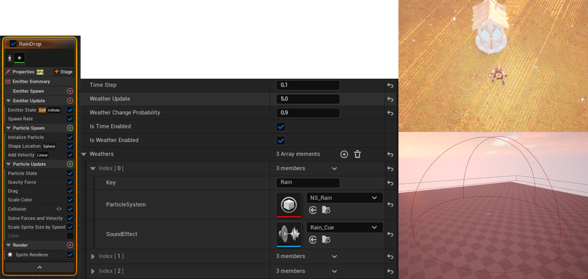

University Project #2

The second Unreal Engine 5 project I worked on was a partially open-world action RPG, inspired by titles like Diablo 4 and Path of Exile. It featured a time of day and weather system utilizing Niagara, a static node-based spawn system for AI agents, both enemy and neutral AI agents, and abilities.

In the project I worked with only one other student. I was responsible for the creation of the dynamic weather system, the day and night cycle, the static node-based spawn system, enemy and NPC AI agents, Smart Objects usable by the NPCs, the creation and design of the level, character and AI animations and models. For version control we used Perforce.
The weather and time system operated via a central controller node which could change the weather, and the time of day. It propogated the changes to weather nodes which could be independently placed and scaled in the level, and configured for particle density, amount. The weathers had to be created on the main controller, where a unique key was needed, a particle effect (created in Niagara) and a sound effect. For the project I made a rain and a snow effect.
The spawn system was a node-based system, where the nodes could be placed and scaled in the level. The nodes could be configured for the amount of agents to spawn, whether the picking of agents were random, a respawn timer and the characters itself. The characters were handled in a heterogeneous collection, where the character classes had to be derived from a base class. Other than that they could be assigned any materials, AI Controller and behaviour tree. The system was used for both the enemies and the NPCs.
The AI agents were created using behavior trees. There were also Smart Objects created which could be used by the NPCs. Two examples of this are the bench and the house which they used varyingly based on the weather. This was achieved by creating Gameplay Tags and then later on filtering the SOs based on the tags. The tags were also used for differentiating behaviour patterns for the boss enemy based on remaining health.
Last but not least I had to create the animation montages associated with the abilities, and the usage of the smart objects. Most models and animations were sourced from Mixamo, Quixel and the Unreal Marketplace.